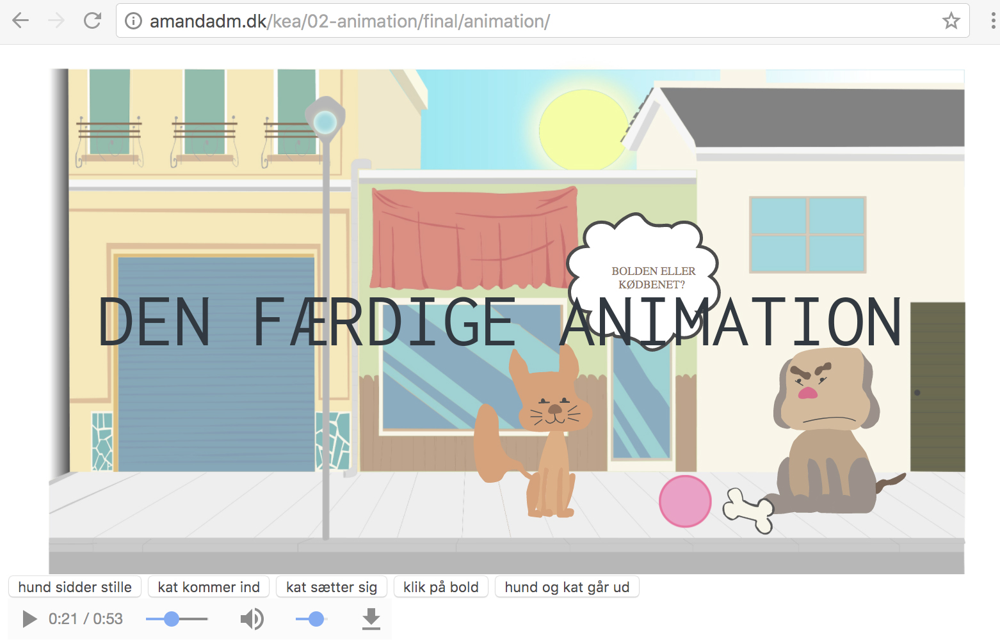

I denne opgave har jeg lavet min færdige animations fortælling, hvor jeg har udarbejdet:
Hele processen omkring animations projektet, syntes jeg var enormt interessant. Jeg synes dog det var meget tidspresset, hvilket var lidt frustrerende i forhold til hvor detaljeret man gjorde sine figurer.
